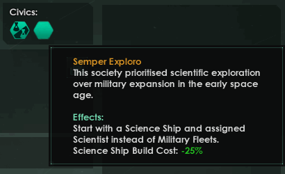
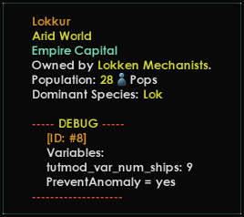
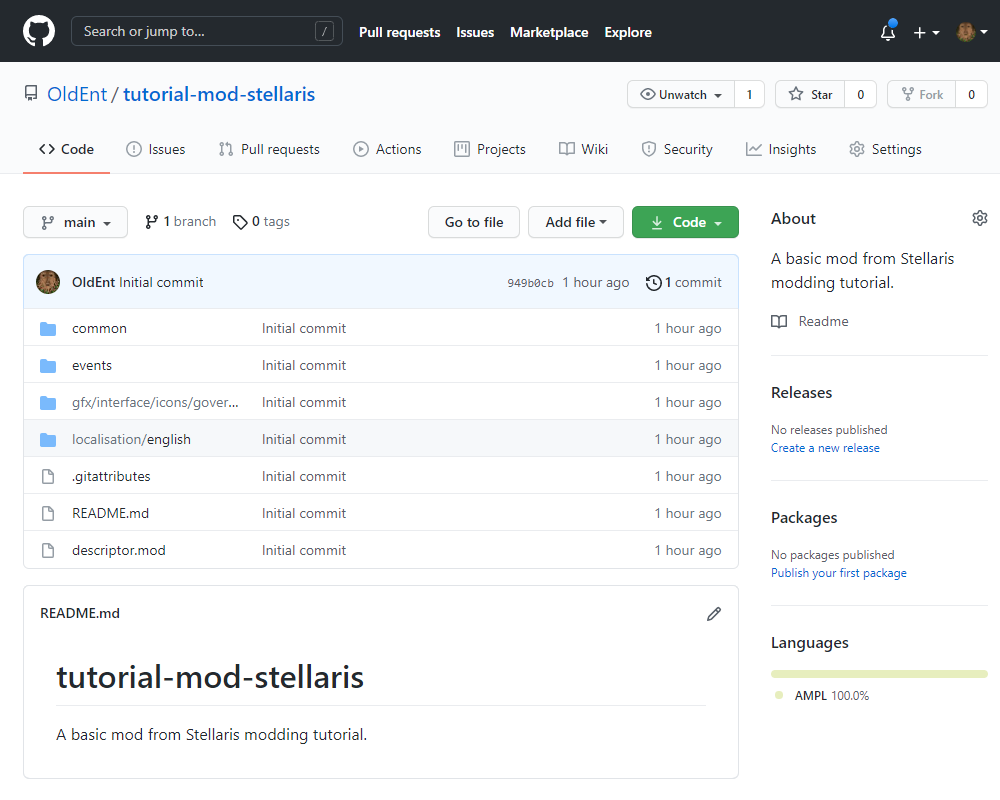

Modding tutorial
This is an introductory modding tutorial for Stellaris. It covers steps necessary to create a basic mod.
Unless stated otherwise, every step assumes working on MS Windows.
Note: If you have a mod both as a local and as a workshop subscription game will refuse to load it.
Generate blank mod
You can get started creating a blank mod using either the Launcher to generate the starting files and directory, or doing so manually. Use the images below as a guide to creating a new mod with the Launcher, or skip down to the Manual section for instructions on creating the files yourself.
Launcher
{kind=link}
{kind=link}
{kind=link}
{kind=link}
{kind=link}
Manually
The above effect can be achieved without using Paradox Launcher. Every mod requires two descriptor files, each one in a proper directory.
- First mod descriptor contains metadata and local path where the game (Paradox Launcher) should look for the mod. It must be placed in %USERPROFILE%\Documents\Paradox Interactive\Stellaris\mod\
- %USERPROFILE% is your system user profile folder (by default this point to the same location as C:\Users\%USERNAME%),
- mod is a Stellaris folder for local mods (as opposed to Steam Workshop mods), Other Stellaris folders are logs, save games, screenshots etc.
- Second mod descriptor contains just metadata and is stored in root (main) mod folder, which in the example would be %USERPROFILE%\Documents\Paradox Interactive\Stellaris\mod\tutmod\
- If Paradox Launcher was not used to create a mod, one must create root mod folder manually.
- Root mod folder descriptor must be named descriptor.mod,
- Paradox Launcher uses a second descriptor when it imports a mod from mod store (Paradox Mods, Steam Workshop). When a mod is downloaded for a mod store, this descriptor file is copied from the mod root folder to the Stellaris mod folder and a local path is added.
Tip: You can paste %USERPROFILE%\Documents\Paradox Interactive\Stellaris\mod\ directly into the file explorer address bar without specifying username.
Properly created mod has the following file structure on start:
- %USERPROFILE%\Documents\Paradox Interactive\Stellaris\mod\tutmod.mod
- %USERPROFILE%\Documents\Paradox Interactive\Stellaris\mod\tutmod\descriptor.mod
Example descriptor contents below.
| \mod\tutmod.mod | \mod\tutmod\descriptor.mod |
|---|---|
version="0.1"
tags={
"Gameplay"
}
name="Tutorial Mod"
supported_version="v3.13.*"
path="C:/Users/OldEnt/Documents/Paradox Interactive/Stellaris/mod/tutmod" |
version="0.1"
tags={
"Gameplay"
}
name="Tutorial Mod"
supported_version="v3.13.*"
|
Tip: You can use masks (wildmarks) in the version string for descriptor files. Instead of writing: supported_version="v3.13.0" you can use: supported_version="v3.13.*"
Note how the only difference between two descriptor files is the path line.
| \mod\tutmod.mod | \mod\tutmod\descriptor.mod |
|---|---|
{kind=link}
{kind=link}
Launcher will recognize mods as up to date even when a minor Stellaris patch is released. This has no effect on mod loading and the code, supported_version is merely a visual indicator.
Trivia: Some low level mods (like music or graphic) use also a wildmark for the second number (expanded support), which the launcher accepts (but throws an accusation entry in the error.log).
Modding tools
Tools checklist
There are many valuable tools available for free, including free and open source. This tutorial recommends installing the minimum:
- Notepad++ – Powerful and fast free and open source text editor, with tabs and split-window function.
- Sublime Text – Powerful, moddable, hackable text editor. Install packages as your needs evolve.
- Visual Studio Code (VSC) – Professional-grade freeware code editor. Do not confuse with Visual Studio.
- CWTools – Paradox Games Language syntax database, freeware and open source, can be installed from within Visual Studio Code. Enables automatic checking if written code is valid.
- Paradox Syntax Highlighting – Colourful syntax highlight, makes code much more readable.
- WinMerge – Differencing and merging tool, free and open source. Contrasts the difference between two text files or folders.
- 7-Zip – Free and open source file archive manager.
- GIMP – Professional-grade free and open source image editor.
- Paint.net – Freeware software for digital image editing. GUI reminiscent of classic MS Paint.
- GitHub – Freeware code management and collaboration tools and services.
- Discord – Freeware instant messaging and VoIP platform, useful for connecting with other modders on Stellaris Modding Den.
- Irony Mod Manager – Launcher and mod manager with conflict solver for Paradox Games. More versatile and faster than Paradox Launcher. Free and open source.
- File Commander / Total Commander (Windows) – Powerful, moddable, hackable file manager.
All of the above is available for free on Windows, Linux, and macOS (except Paint.net, Notepad++ and GitHub, which have viable alternatives).
Setting up CWTools
{kind=link}
CWTools is an extension which works with Visual Studio Code (VSC) and checks Paradox syntax on the go (as you write). It works with most games written for Clausewitz Engine (Stellaris being one of them). Some of the most useful features include:
- Highlighting of errors with tooltip on what is possibly wrong.
- Auto-completion of code, just press TAB when suggestion pops up while writing.
- Generating full list of missing localisation keys.
- Easy commenting and uncommenting of multiple lines. Right click > Command Palette > Toggle Line Comment.
- Auto-formatting of whole file: Right click > Format Document.
Installation steps:
- Download and install Visual Studio Code (VSC)
- When opened select File > Preferences > Extensions
- Click on "Search Extensions in Marketplace" search bar and type in "CWTools". Select "CWTools – Paradox Language Services" and click install in the right window.
- Repeat search for "Paradox Syntax Highlighting" and install it as well.
- Restart Visual Studio Code.
First steps
Preamble
While usually the best way to learn modding is to dissect a mod similar to what we want to achieve, this tutorial focuses on creating a mod from scratch.
We use Visual Studio Code as the primary code editor due to the powerful syntax checking function which CWTools extension grants.
{kind=link}
Sources at hand
Following sources are invaluable to have at hand:
- Modding section of Stellaris Wiki
- List of Stellaris triggers, modifiers and effects, see GitHub page for comprehensive all-in-one list.
- Stellaris Modding Den Discord Server access for live help.
Mod content
Story-focused mods differ from mods introducing new gameplay mechanics or graphics components, but overlap almost always exists. This tutorial tries to touch as wide array of subjects as possible without delving into intricacies.
Game structure
{kind=link}
- For full file structure refer to Modding page.
Stellaris stores most of the content in uncompressed folders easily accessible in its installation directory (SteamLibrary\steamapps\common\Stellaris\ for Steam installation). Modding the game requires overwriting the game files, part of game files, or adding new files next to existing ones, following folder structure and file naming the game uses (rules vary). Directly editing and adding files to game installation folder is highly discouraged. Use mod folder to overwrite or add content.
The most commonly changed contents are in:
- /common/ - bulk of game data and rules,
- /events/ - dictate when and how the game changes based on defined conditions,
- /localisation/ and /localisation_synced/ - text readable to player,
- /gfx/ - graphical components of the game,
- /interface/ - rules for use of graphical components and user interface design.
Every mod has to mirror structure of the installation folder. Mod containing localisation has to put all its language files on /localisation/, just as the game would.
Writing a first mod
\common\governments\civics
Example civic
We will begin by creating a new civic. Civics and origins are stored in \common\governments\civics\. Origins are civics with a few changes.
An example civic code (\common\governments\civics\00_civics.txt):
(Though use a naming scheme like "00_MODNAME_civics.txt" as using 00_civics.txt would override the vanilla civics.)
civic_beacon_of_liberty = {
potential = {
ethics = { NOT = { value = ethic_gestalt_consciousness } }
authority = { NOT = { value = auth_corporate } }
}
possible = {
authority = {
value = auth_democratic
}
ethics = {
OR = {
text = civic_tooltip_egalitarian
value = ethic_egalitarian
value = ethic_fanatic_egalitarian
}
NOR = {
text = civic_tooltip_not_xenophobe
value = ethic_xenophobe
value = ethic_fanatic_xenophobe
}
}
}
random_weight = { base = 5 }
modifier = {
country_unity_produces_mult = 0.15
}
}
Let us breakdown the civic:
| civic_beacon_of_liberty | civic key, used to reference it in the code, including localisations |
| potential | conditions for civic to be available for choice |
| possible | conditions for civic to be a valid choice |
| random_weight | determines likelihood of appearing for a randomly generated empire. If two civics exist and both have a weight of 5 then chances are 50:50. |
| modifier | direct effects of a civic on an empire. More complex way is to use events checking for a civic and executing effects. |
This specific civic has localisation key civic_beacon_of_liberty, is a potential choice only for empires which a) ethics are NOT gestalt and b) do NOT have authority corporate.
Any empire which meets the above criteria will have the civic as a choice, but it is possible to take the civic only if a) authority EQUALS democratic and b) ethics are EQUAL to egalitarian OR EQUAL to fanatic egalitarian, and NEITHER are equal to xenophobe or fanatic xenophobe.
Note how text = function is used to invoke a custom tooltip instead of automatically generated one. This is usually not needed but can be useful.
This civic has an absolute weight of 5 for the purpose of galaxy generation. If there are two other civics of weight 45 and 50, then the civic in question would have only 5% chance of appearing on a randomly generated empire, in principle (45 + 50 = 95 vs 5).
The civic gives the country a modifier of +15% Unity production.
Civic definitions do not support complex conditions but it is worth to familiarise yourself with how logical operators work.
Custom civic
| Folder | File | Content |
|---|---|---|
{kind=link}
{kind=link}
{kind=link}
| CWTools suggestion | TAB | Repeat |
|---|---|---|
{kind=link}
{kind=link}
{kind=link}
Let us write a code of the new civic using civic_beacon_of_liberty as a reference.

Code formatting
Note how you can comment out a part of code using # sign. Anything after # in a specific line will not be read by the game.
We will now make our own code by swapping out parts we do not like and inject our own.
First, let us remove auth_corporate exclusion and add a comment on ethic_gestalt_consciousness exclusion.
# civic_beacon_of_liberty = {
tutmod_civic = {
potential = {
ethics = {
NOT = {
value = ethic_gestalt_consciousness
}
}
# authority = {
# NOT = {
# value = auth_corporate
# }
# }
}
possible = {
authority = {
value = auth_democratic
}
ethics = {
OR = {
text = civic_tooltip_egalitarian
value = ethic_egalitarian
value = ethic_fanatic_egalitarian
}
NOR = {
text = civic_tooltip_not_xenophobe
value = ethic_xenophobe
value = ethic_fanatic_xenophobe
}
}
}
random_weight = {
base = 5
}
modifier = {
country_unity_produces_mult = 0.15
}
}
{kind=link}
Adding content
We are adding an additional condition for ethics.
OR = {
text = civic_tooltip_materialist
value = ethic_materialist
value = ethic_fanatic_materialist
}
The code should now look like below:
# civic_beacon_of_liberty = {
tutmod_civic = {
potential = {
ethics = {
NOT = {
value = ethic_gestalt_consciousness # No gestalt.
}
}
# authority = {
# NOT = {
# value = auth_corporate
# }
# }
}
possible = {
authority = {
value = auth_democratic
}
ethics = {
OR = {
text = civic_tooltip_materialist
value = ethic_materialist
value = ethic_fanatic_materialist
}
OR = {
text = civic_tooltip_egalitarian
value = ethic_egalitarian
value = ethic_fanatic_egalitarian
}
NOR = {
text = civic_tooltip_not_xenophobe
value = ethic_xenophobe
value = ethic_fanatic_xenophobe
}
}
}
random_weight = {
base = 5
}
modifier = {
country_unity_produces_mult = 0.15
}
}
To be a valid choice an empire has to be to some degree materialist, to some degree egalitarian, and neither xenophobe nor fanatic xenophobe. We did not have to worry about creating civic_tooltip_materialist localisation because it already exists in the game files.
Localisations
Localisation files

Useful console commands:
reload text – reloads localisation table. switchlanguage english – switches used language and reloads localisation table. toggle_string_id - displays StringIDinstead of localisation.
CWTools highlights keys which are missing localisations, you can see full list of potential issues at the bottom of VSCode window:
Localisation key tutmod_civic is not defined for English Localisation key tutmod_civic_desc is not defined for English
We need to create a localisation folder structure. Create \localisation\english\ folders inside root mod folder first, and then create tutmod_l_english.yml. VSCode will automatically encode file in UTF8 with BOM which Stellaris localisation files need. Both VSCode and Notepad++ are able to easily change file encoding if needed.
Localisation files require language declaration in the first line. Simply write:
l_english:
Supported language declarations are:
braz_por english french german japanese korean polish russian simp_chinese spanish
We have file prepared. Switch back to tutmod_civics.txt tab, right mouse click > Command Palette > Generate missing loc for all files. Copy generated strings into loc file.
We will fill the placeholders with the following information:
l_english:
tutmod_civic: "Semper Exploro"
tutmod_civic_desc: "This society prioritised scientific exploration over military expansion in the early space age."
tutmod_civic_effects: "Start with a $science$ and assigned $scientist$ instead of $OUTLINER_FLEETS$."
Note the $ signs which can be used to refer to other localisation key, be it existing in game or modded one. You can view vanilla keys directly in SteamLibrary\steamapps\common\Stellaris\localisation\english\ .
Due to the way Stellaris localisations work, there is no way to set up a fallback localisation for other languages to use. If you generate localisations for English only, users playing the game in other language will see a raw key name, ie. tutmod_civic. We have to copy the localisation file \localisation\english\tutmod_l_english.yml to the corresponding language folders, change file name, and adjust language declaration at the beginning of the file:
\localisation\english\tutmod_l_braz_por.yml \localisation\english\tutmod_l_english.yml \localisation\english\tutmod_l_french.yml \localisation\english\tutmod_l_german.yml \localisation\english\tutmod_l_japanese.yml \localisation\english\tutmod_l_korean.yml \localisation\english\tutmod_l_polish.yml \localisation\english\tutmod_l_russian.yml \localisation\english\tutmod_l_simp_chinese.yml \localisation\english\tutmod_l_spanish.yml
With an example tutmod_l_braz_por.yml containing:
l_braz_por: tutmod_civic:0 "Semper Exploro" tutmod_civic_desc:0 "This society prioritised scientific exploration over military expansion in the early space age." tutmod_civic_effects:0 "Start with a $science$ and assigned $scientist$ instead of $OUTLINER_FLEETS$."
Advantage of using $ signs to reference other keys is that we do not have to translate string multiple times, game will automatically pull the content for the language user plays on. This might not always result in a grammatically correct sentence, it usually works best with the key being used in nominative case.
Custom tooltips
Game automatically generates localisations for things like tooltips based on effects in the game. For civics it means we do not have to write what effect civic has, as the game will pull all modifiers we wrote and generate sentences, ie. having below in civic definition:
modifier = {
country_unity_produces_mult = 0.15
}
will result in the following in the effects tooltip:
Monthly Unity: +15%
Sometimes we want to add a text for more effects. We will reference tutmod_civic_effects in the tutmod_civics.txt file for tutmod_civic and swap modifier while we are at it.
# modifier = {
# country_unity_produces_mult = 0.15
# }
description = "tutmod_civic_effects"
modifier = {
ship_science_cost_mult = -0.25
}
Tutorial civics file should now look as below:
{kind=link}
# civic_beacon_of_liberty = {
tutmod_civic = {
potential = {
ethics = {
NOT = {
value = ethic_gestalt_consciousness # No gestalt.
}
}
# authority = {
# NOT = {
# value = auth_corporate
# }
# }
}
possible = {
authority = {
value = auth_democratic
}
ethics = {
OR = {
text = civic_tooltip_materialist
value = ethic_materialist
value = ethic_fanatic_materialist
}
OR = {
text = civic_tooltip_egalitarian
value = ethic_egalitarian
value = ethic_fanatic_egalitarian
}
NOR = {
text = civic_tooltip_not_xenophobe
value = ethic_xenophobe
value = ethic_fanatic_xenophobe
}
}
}
random_weight = {
base = 5
}
description = "tutmod_civic_effects"
modifier = {
shipclass_science_ship_build_cost_mult = -0.25
}
# modifier = {
# country_unity_produces_mult = 0.15
# }
}
Logs & Debugging
Logs are found in the locations shown in the table below.
| OS | Path |
|---|---|
| Linux | ~/.local/share/Paradox Interactive/Stellaris/logs
|
| Windows | …\Documents\Paradox Interactive\Stellaris\logs
|
| Mac OS | ~/Documents/Paradox Interactive/Stellaris/logs
|
EXE parameters
There are some special options for the stellaris.exe you can input to improve your logging/debugging:
-script_debug - (Can ignore)
-debug_mode - Extra logging
-debugtooltip - Starts first game you enter with debugtooltip
-logprefix - Modifies each log file name with the set prefix
-logpostfix - Modifies each log file name with the set postfix
-logall - Logs no longer fail to log duplicate string values
log effect
We can use the following effect to output any string into the game.log:
log - Prints a message to game.log for debugging purposes log = <string> Supported Scopes: all
This is how most modders output data if they want to check how their mod works, it is especially useful for debugging event scripts.
Note: By default, Stellaris will only output the first occurrence of identical log messages. For example, if you use log in a loop and there's no change in the string, you will only see the text outputted once. To avoid this, either make sure the text is different each time (by incorporating an incrementing Variable) or pass the -logall argument (see above) to Stellaris when starting the game.
game.log & error.log
Modders mostly use error.log and game.log to debug the game. Start the game with the tutmod loaded and open error.log. You will find one line that references "tutmod" (search for the mod prefix tutmod_ to quickly find it):
[18:22:15][government_civic_type.cpp:185]: Did not find an icon for civic: tutmod_civic
For now, all we need to know that there is an icon missing for tutmod_civic.
Note: The `error.log` is handled through exception catching, so most of the time (about 90%+) of crashes (CTD) it won’t contain anything related to the actual crash. For the remaining cases (~10%-), the crash is caused by the same issue that was momentarily logged elsewhere, still making the log unhelpful for the specific crash event. Crash-related data is instead stored in the Stellaris\crashes\ directory, but this information is primarily useful only to the Stellaris developers.
See Error.log for a list of common errors and their possible causes.
Events
fire_only_once
Event is a script which changes state of the game by using effects, provided triggers are met and event was called.
Create a new \events\tutmod_events.txt file.
Every events file has to have at least one namespace declared at the beginning. We use:
namespace = tutmod
It is a good practice for any mod which affects gameplay (changes checksum) to notify its presence to other mods. The commonly accepted way is to set up a global_flag other mods can check if it exists via effect:
set_global_flag - Sets an arbitrarily-named global flag set_global_flag = <key> Supported Scopes: all
Example file would look like the following:
namespace = tutmod
country_event = {
id = tutmod.1
hide_window = yes
fire_only_once = yes
trigger = {
NOT = {
has_global_flag = tutmod_installed
}
}
immediate = {
set_global_flag = tutmod_installed
}
}
namespace = tutmod– declares namespacecountry_event = {}– declares event of country scope, it is also name of an effect used to call an event.id = tutmod.1– declares unique id of the event. Consists of namespace and number, separated by a stop.hide_window = yes– a popup window for player will not be created. This is how most events in the game work.fire_only_once = yes– successfully fired event (called and met trigger conditions) will be added to blocklist and will never be used again in current game.trigger = {}– contains list of conditions (triggers) which have to be met in order for called event to fire. Default this/root scope is defined by name of event scope (country_event here).immediate = {}– contains list of effects which change the state of the game when event fires.
This event does not contain the is_triggered_only = yes declaration. This means event will be checked DAILY for EVERY country. If the event was of different scope, ie. pop_event, it would check for EVERY pop in the game DAILY. With a galaxy of 5000 pops it would mean 5000 checks every day. It is a very resource intensive way of scripting and therefore you should always add is_triggered_only = yes, unless there is a good reason not to. is_triggered_only = yes blocks event from checking itself and will require it to be called from elsewhere (more on that below).
We can limit checking of the event by using the aforementioned fire_only_once = yes. Event still checks daily for every country, but as soon as the first country fires the event it will be blocklisted and no longer checked. Since the conditions of the event are simple (NOT = { has_global_flag = tutmod_installed }) event will fire as soon as game starts.
Specific trigger used in trigger section is:
has_global_flag - Checks if a Global Flag has been set has_global_flag = <flag> Supported Scopes: all
Immediate section is self-explanatory. It contains a single effect:
set_global_flag - Sets an arbitrarily-named global flag set_global_flag = <key> Supported Scopes: all
This country event is read as the following by the game: Every country must check daily conditions of tutmod.1 event which are "global_flag tutmod_installed has NOT been set". If true set_global_flag = tutmod_installed, then add event to blocklist.
is_triggered_only
As a general rule every event should have is_triggered_only = yes declared. This makes game not checking the event until it is specifically called by an effect or on_action. Below is a code for the second tutmod event (should be written in \events\tutmod_events.txt):
# Removes military fleets, grants science ship and scientist.
# Scopes:
# Scope: root: country this: country
country_event = {
id = tutmod.2
hide_window = yes
is_triggered_only = yes # Fire only when called from elsewhere.
trigger = {
has_civic = tutmod_civic # Must have tutmod_civic civic.
}
immediate = {
every_owned_fleet = {
# Iterate through every owned fleet of THIS country.
limit = {
is_ship_class = shipclass_military # only fleets meeting shipclass_military criteria
}
delete_fleet = {
target = this # Delete THIS fleet.
kill_leader = no # Do not delete leader of THIS fleet (unassigns).
}
}
create_leader = {
# Create leader for THIS country.
class = scientist # Specified scientist class.
species = this # Where THIS is the scope of where effect was written in (country, therefore species will be main country species).
}
create_fleet = {
# Create fleet for THIS country.
effect = {
# Execute list of effects for THIS fleet.
set_owner = prev # Set owner of THIS fleet to PREV (PREV/previous scope being country we in previous brackets refered to as THIS).
create_ship = {
# Create ship for THIS fleet.
random_existing_design = science # of random design which is science ship.
graphical_culture = owner # Visual style of the ship is the same as OWNER of the fleet (can use PREV here).
}
set_location = {
target = owner.capital_scope.solar_system.starbase # Set location of the fleet to owner's capital_scope's solar_system's starbase.
# distance = 0
# angle = random
# direction = out_system
}
assign_leader = last_created_leader # Assigns last created leader to the fleet.
}
}
}
}
Code is more readable in VSCode.
This event has only one trigger which checks if the country has_civic = tutmod_civic.
There are several effects in the immediate section. Most of them are self-explanatory. All of them are listed on the effects list and it is worth reviewing them.
Scopes
Let us analyse scope operators used.
create_fleet = {
effect = {
set_owner = prev
create_ship = {
random_existing_design = science
graphical_culture = owner
}
set_location = {
target = owner.capital_scope.solar_system.starbase
}
assign_leader = last_created_leader
}
}
In the code create_fleet is called directly in country_event = { immediate = {. This means THIS scope of the effect will refer to the country event was fired for.
root = country this = country
Inside create_fleet effect we call a series of effects using effect block. Now, inside effect block, THIS scope operator will refer to this fleet (because it was called inside THIS fleet).
root = country this = fleet prev = country
Note how we can switch back to previous scope by using PREV scope operator.
effect = {
set_owner = prev
Effect set_owner is called inside THIS fleet and targets PREV, which is country.
Common
on_actions
We mentioned how events can be called from effects and on_actions. We can call events on_game_start to assure proper set up for the empire with tutmod_civic. Simply create \common\on_actions\tutmod_on_actions.txt file and declare events which should fire.
on_game_start_country = {
events = {
tutmod.1
tutmod.2
}
}
GFX
{kind=link}

All graphical assets are stored inside /gfx/ folder. Civics icons should be placed specifically in \gfx\interface\icons\governments\civics\ .
We need to create a tutmod_civic.dds which is 28x28 (resolution for civics icon). For the purpose of this tutorial we will use a blank template gratuitously donated to and available on Stellaris Modding Den Discord Server in the #shared-art channel.
\gfx\interface\icons\governments\civics\tutmod_civic.dds
GIMP and Paint.net are two very good tools commonly used to create Stellaris assets.
Testing a mod
Any trigger, effect or event can be tested from the console while in game. Console will accept any valid script input, as long as it is proceeded by the declaration of what it is (trigger, effect or event).
Console executes script on a scope which is currently selected (planet, fleet). To select empire scope open government menu. Scoping to unclickable objects might require additional scope operators in script.
We can check if an empire has a tutmod_civic by clicking on the empire flag and executing the following trigger script:
trigger OR = { has_civic = tutmod_civic has_valid_civic = tutmod_civic }
- has_civic checks if the current country has the specified civic,
- has_valid_civic checks if the current country has a certain civic and if its validated (performs additional check if country fulfils criteria of a given civic).
In practice we check only against one of the above triggers as has_civic makes has_valid_civic redundant when used.
{kind=link}
We can also execute effects in the same way. Let us count ships of an empire and store value in a selected object, ie. planet. Click on a homeworld planet and execute the following:
effect owner = { every_owned_ship = { prevprev = { change_variable = { which = tutmod_var_num_ships value = 1 } } }
where:
owner = {}– scope operator, jumps from selected scope to the owner of selected scope (in the example from planet to a planet owner),every_owned_ship = {}– iterates through each ship in the fleet or owned by the country and executes effects. We have omitted limit triggers because we want to iterate through all,prevprev = {}– scope operator, while executed insideevery_owned_shipeffects it will jump back (prev) two times (prevprev), fromevery_owned_shiptoownerand fromownerto a scoped homeworld planet where effect was executed on.change_variable– change the named variable by a given amount in a given scope.
To view a value we can either open up a save or use debugtooltip command and hover over an object to display flags and variables stored in it.
{kind=link}

Note:
- The console accepts pasted in input, even if it contains multiple lines. It does not show it properly but it does execute it.
- For testing performance issues you can use the
script_profilercommand (once to start profiling, and again to finish and print the results).(since v.3.5)
Git repository
Git is a version control system, it is used primarily in software development. It tracks changes to files and helps in collaboration. With Git repository set up you can:
- Track and revert changes to your mod to any point prior.
- Share code, including links to specific lines with ease.
- Generate release packages from specific repository revisions, for the ease of download.
- Allow others to propose tweaks to your code with ease, which you can accept and merge in with a press of a button.
For the purpose of this tutorial we use popular GitHub which offers free hosting service:
- Create a folder specifically for GitHub repositories, ie.
G:\GitHub\ - Clone your mod folder to the above GitHub repositories folder. Rename cloned folder to something recognisable online if you want, in the example we rename
G:\GitHub\tutmod\toG:\GitHub\tutorial-mod-stellaris\. - Create GitHub account on GitHub homepage.
- Download and install GitHub desktop client (available for Windows and Mac, Linux has distro-specific clients you can look into).
- Open GitHub desktop client and login to your account (File > Options > Accounts). This is not strictly necessary but will allow you to push code to online repository. Further steps assume this is the case.
- File > New Repository.
| Create | Preview initial commit | Publish | Available online |
|---|---|---|---|
|
 Repository is now available online. Pictured example can be accessed at https://github.com/OldEnt/tutorial-mod-stellaris . |
{kind=link}
{kind=link}
{kind=link}
{kind=link}
Any changes to the repository simply require adding, removing or changing files in the repository folder. GitHub program monitors folder for any changes and will allow for update push if those are detected. Change of the code state is called a commit.
External links
- Stellaris Dev Diary #182: The Perils of Scripting and How to Avoid Them – written by Caligula, Stellaris Content Designer
References
| Empire | Empire • Ethics • Governments • Civics • Origins • Mandates • Agendas • Traditions • Ascension perks • Edicts • Policies • Relics • Technologies • Custom empires |
| Pops | Jobs • Factions |
| Leaders | Leaders • Leader traits |
| Species | Species • Species traits |
| Planets | Planets • Planetary feature • Orbital deposit • Buildings • Districts • Planetary decisions |
| Systems | Systems • Starbases • Megastructures • Bypasses • Map |
| Fleets | Fleets • Ships • Components |
| Land warfare | Armies • Bombardment stance |
| Diplomacy | Diplomacy • Federations • Galactic community • Opinion modifiers • Casus Belli • War goals |
| Events | Events • Anomalies • Special projects • Archaeological sites |
| Gameplay | Gameplay • Defines • Resources • Economy • Game start |
| Dynamic modding | Dynamic modding • Effects • Conditions • Scopes • Modifiers • Variables • AI • On actions |
| Media/localisation | Maya exporter • Fonts • Portraits • Flags • Event pictures • Interface • Icons • Music • Localisation |
| Other | Console commands • Save-game editing • Steam Workshop • Modding tutorial |